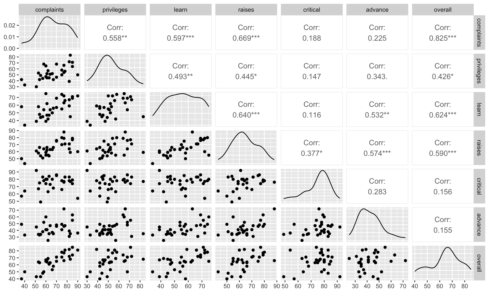

Multiple Linear Regression
Stat 230: Applied Regression Analysis
Example
In an effort to understand the important aspects of a satisfactory supervisor, clerical employees at a large financial organization were asked to rate their immediate supervisor.
The survey questions were designed to measure overall performance of the supervisor, as well as six additional characteristics.
Employees were asked to rate the following statements on a scale from 0 to 100
(0 = “completely disagree”, 100 = “completely agree”)
The data
rating |
Overall rating of supervisor performance |
complaints |
Score for “Your supervisor handles employee complaints appropriately.” |
privileges |
Score for “Your supervisor allows special privileges.” |
learn |
Score for “Your supervisor provides opportunities to learn new things.” |
raises |
Score for “Your supervisor bases raises on performance.” |
critical |
Score for “Your supervisor is too critical of poor performance.” |
advance |
Score for “I am not satisfied with the rate I am advancing in the company?” |
EDA: Scatterplot matrix

EDA: Correlation matrix
overall complaints privileges learn raises critical advance
overall 1.0000 0.8254 0.4261 0.6237 0.5901 0.1564 0.1551
complaints 0.8254 1.0000 0.5583 0.5967 0.6692 0.1877 0.2246
privileges 0.4261 0.5583 1.0000 0.4933 0.4455 0.1472 0.3433
learn 0.6237 0.5967 0.4933 1.0000 0.6403 0.1160 0.5316
raises 0.5901 0.6692 0.4455 0.6403 1.0000 0.3769 0.5742
critical 0.1564 0.1877 0.1472 0.1160 0.3769 1.0000 0.2833
advance 0.1551 0.2246 0.3433 0.5316 0.5742 0.2833 1.0000
Fitting the model
Target:
Fitted regression equation: \(\widehat{Y}_i = \widehat{\beta}_0 + \widehat{\beta}_1 x_{i1} + \widehat{\beta}_2 x_{i2} + \cdots + \widehat{\beta}_p x_{ip}\)
Standard error for MLR model: \(\widehat{\sigma}\)
Procedure:
Least squares estimation: choose the coefficients to minimize \[\text{SSE} = \sum_{i=1}^n \left(Y_i - \widehat{Y}_i \right)^2\] Then use \(\widehat{\sigma} = \sqrt{\frac{\text{SSE}}{n-(p+1)}}\)
Interpreting \(\widehat{\beta}_0\)
(Intercept) complaints privileges learn raises critical
10.787 0.613 -0.073 0.320 0.082 0.038
advance
-0.217
Interpreting \(\widehat{\beta}_j\)
(Intercept) complaints privileges learn raises critical
10.787 0.613 -0.073 0.320 0.082 0.038
advance
-0.217
The expected change in the response for a 1-unit increase in \(x_j\), when all other variables are held constant.
We expect a 0.613 point increase in a supervisor’s overall score for a 1-point increase on the complaints scale, holding all other variables constant
Testing a single coefficient
Hypotheses: \(H_0: \ \beta_j = \#\) vs. \(H_a: \ \beta_j \underset{>}{\overset{<}{\ne}} \#\)
Test statistic: \(t = \dfrac{\hat{\beta}_j - \#}{SE(\beta_j)}\)
Reference distribution: \(t\) distribution with d.f. = \(n-(p+1)\)
p-value: Area in the tail(s) specified by \(H_a\)
Confidence intervals for a single coefficient
\(\widehat{\beta}_j \pm t^*_{n-(p+1)} \cdot SE(\widehat{\beta}_j )\)
\(t^*_{n-(p+1)}\) is the \(1 - \alpha/2\) quantile from the t-distribution with \(d.f. = n-(p+1)\)
Example
| (Intercept) |
10.7871 |
11.5893 |
0.9308 |
0.3616 |
-13.1871 |
34.7613 |
| complaints |
0.6132 |
0.1610 |
3.8090 |
0.0009 |
0.2802 |
0.9462 |
| privileges |
-0.0731 |
0.1357 |
-0.5382 |
0.5956 |
-0.3538 |
0.2077 |
| learn |
0.3203 |
0.1685 |
1.9009 |
0.0699 |
-0.0283 |
0.6689 |
| raises |
0.0817 |
0.2215 |
0.3690 |
0.7155 |
-0.3764 |
0.5399 |
| critical |
0.0384 |
0.1470 |
0.2611 |
0.7963 |
-0.2657 |
0.3425 |
| advance |
-0.2171 |
0.1782 |
-1.2180 |
0.2356 |
-0.5857 |
0.1516 |